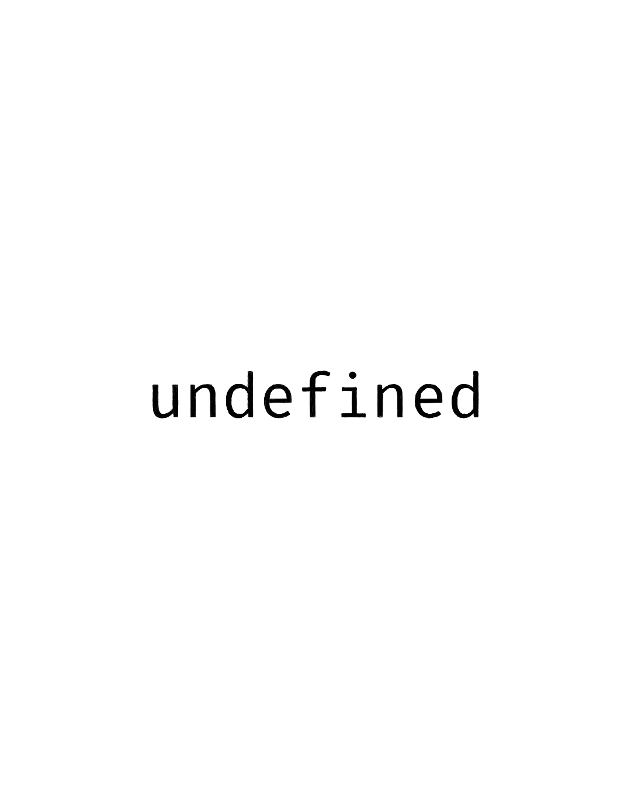

Un emprendedor de Buenos Aires me contactó hace dos meses. Después de la primera reunión les mandé 12 opciones de naming. Hoy: sigue discutiendo cuál elegir.
El problema no es que sea exigente. El problema es que espera que el nombre resuelva todo.
Quiere que el nombre comunique que es tecnológico, que es innovador, que es confiable, que tiene buen precio, que es argentino pero con proyección internacional, que apela a jóvenes pero también a empresas establecidas.
La realidad:
El problema raíz: confundimos marca con empresa.
Primero elijo el nombre perfecto → Después diseño el logo ideal → Recién entonces empiezo a comunicar.
Primero comunico qué hago y para quién → Lo hago consistentemente → La marca firma toda esa comunicación.
La marca no es la empresa, la empresa es la marca.
Lo que SI hace una marca:
Lo que NO hace una marca:
Todo eso lo hace tu publicidad, tu contenido, tu forma de atender clientes, tu producto real.
Farmacity tiene una marca recontra trabajada. Colores corporativos impecables. Identidad visual coherente. Promesa de 'nueva forma de comprar en una farmacia'.
Pero después entrás a la Web-App hecha en React y... :
¿El resultado? No importa cuán linda sea la marca. La marca firma algo que NO FUNCIONA.
La marca no puede arreglar un producto malo. No puede compensar una mala experiencia. No puede mentir por vos.
El camino correcto: empresa primero, marca después
Paso 1: Definí tu propuesta de valor real
Antes que el nombre, respondé esto: ¿Qué problema resolvés? ¿Para quién exactamente? ¿Qué te hace diferente de tu competencia? ¿Cuál es tu promesa específica?
Si no podés responder esto con claridad, ningún nombre te va a salvar.
Paso 2: Elegí un nombre 'suficientemente bueno'
No necesitás el nombre perfecto. Necesitás un nombre que no sea ofensivo, que sea pronunciable, que tenga dominio disponible y que a vos y tus socios no les genere rechazo. Eso es suficiente. El resto lo construís con el tiempo.
Paso 3: Empezá a comunicar coherentemente
La marca se construye con cada interacción: cómo atendés el teléfono, cómo redactás tus emails, qué contenido publicás, cómo respondés en redes, qué experiencia generás en tu producto. Eso es tu marca real. El logo solo firma todo eso.
Paso 4: Dejá que la marca crezca con el proyecto
Apple se llamó "Apple Computer" los primeros años. Amazon vendía solo libros. Google era un nombre raro que nadie entendía. Las grandes marcas no nacieron perfectas. Se construyeron siendo consistentes en su comunicación.
La verdad incómoda sobre branding
Nike no es famosa por su nombre. Es famosa porque hace buenos productos, hace publicidad memorable, y patrocina a los mejores deportistas del mundo.
El 'swoosh' es reconocible porque viste ese logo millones de veces asociado a cosas que te generaron valor. No porque sea un logo perfecto.
La marca no hace el trabajo de comunicación. La marca firma el trabajo de comunicación que vos hacés.